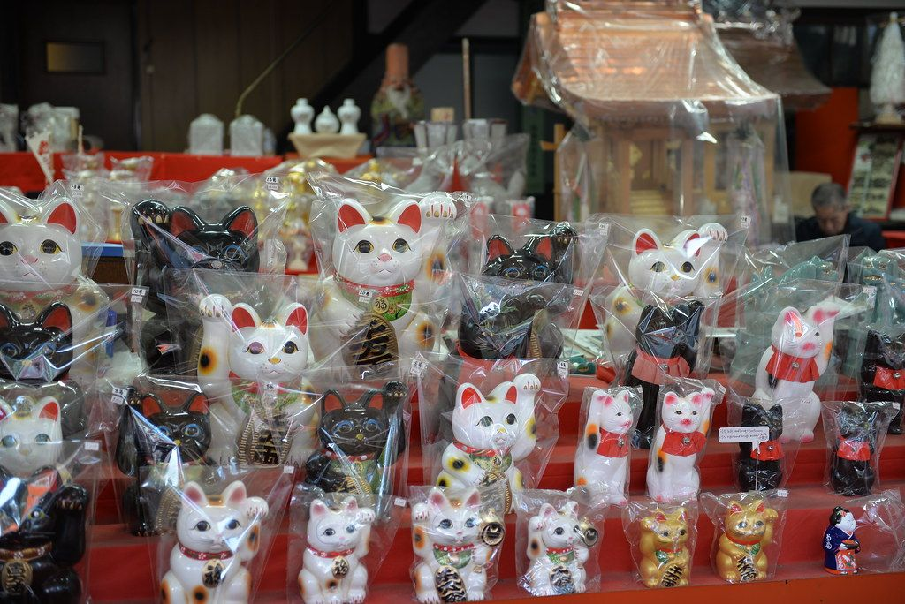
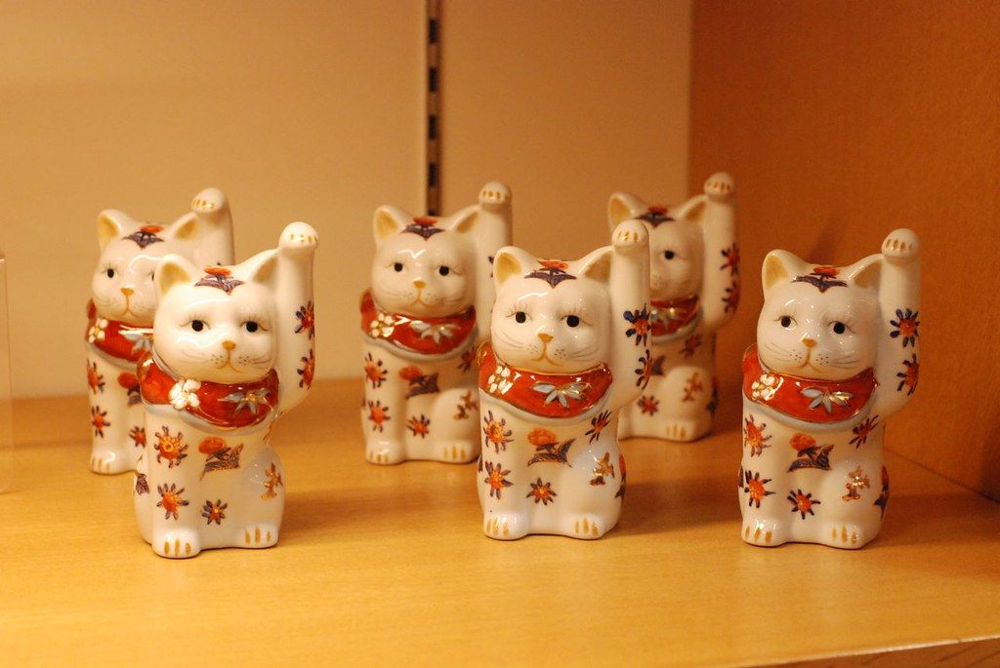
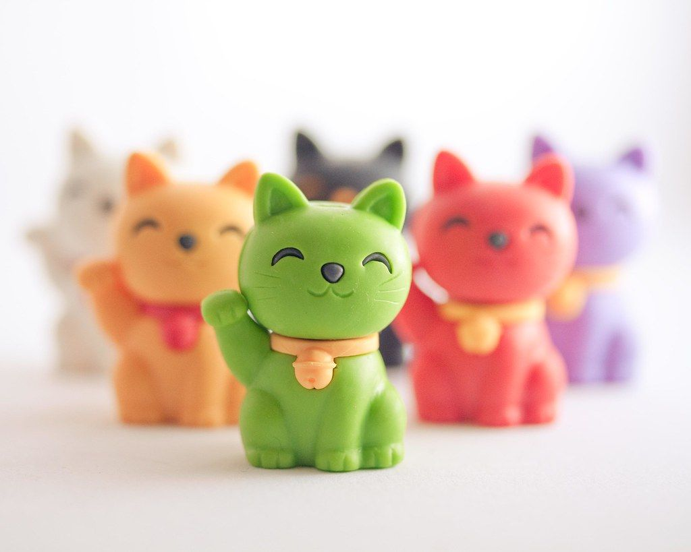

ブログ
招き猫の意味と由来：右手・左手・色でどう変わる？
公開 2026-11-25・日本ねこ編集部
結論から言うと、招き猫は右手がお金を左手が人や客を招くといわれます。ただしこれは絶対の決まりではありません。発祥には豪徳寺説や今戸焼説など複数の説があります。色にも黒は魔除け・赤は無病息災・金は金運といった意味づけがあるとされています。

写真：shankar s.（CC BY 2.0）
お店の入り口やレジのそばでよく見かける招き猫。片手を挙げてこちらを招くしぐさは、海外のお土産屋さんでも見かけるほど日本らしい縁起物の代表です。
この記事では、右手と左手で意味が変わるのか・発祥はどこなのか・色ごとの意味は何かをまとめました。諸説あるものばかりなので、絶対の正解としてではなく由来のひとつとして楽しんでください。
右手と左手、意味の違いは？
一般的には右手（前脚）を挙げた招き猫はお金を、左手を挙げた招き猫は人や客を招くといわれています。両手を挙げたものは金運と人縁の両取りと解釈される一方、欲張りすぎて「お手上げ」に通じると嫌う見方もあるそうです。
| 挙げる手 | 一般的な意味 |
|---|
| 右手 | お金・金運を招く |
| 左手 | 人・客を招く |
| 両手 | 欲張りと見る向きもある |
ただし発祥の地とされる豪徳寺の招き猫は右手を挙げています。この手の意味づけだけでは説明がつかない部分もあり、地域や作り手によって考え方が違うと見たほうがよさそうです。かつては左手を挙げたものが主流でした。1997年ごろから右手を挙げたものの注文が増え、愛知県常滑市の業者によれば比率が逆転したとも紹介されています。

写真：su.bo（CC BY 2.0）
招き猫の発祥、4つの説
招き猫がいつどこで生まれたのかは、実ははっきりしていません。有力とされる説がいくつも伝えられています。
| 説 | 場所 | 内容 |
|---|
| 豪徳寺説 | 世田谷区 | 招き猫発祥の伝説で知られる寺。白い招き猫が無数に奉納されている |
| 今戸焼説 | 浅草・今戸町 | 今戸焼の土人形「丸〆猫」が招き猫の原型とされる |
| 自性院説 | 新宿区西落合 | 室町時代、猫に手招きされて危機を救われた武将の伝説が残る |
| 吉原・西方寺説 | 台東区 | 遊女が亡くなった愛猫を供養した像が起源とされる |
どの説が正しいと決まっているわけではありません。今戸焼の丸〆猫説は特に有力視されているとされますが、訪れる土地ごとに由来を確かめてみるのも招き猫めぐりの楽しみです。日本各地の猫にまつわる場所については日本の猫島めぐりもご覧ください。
色にはそれぞれ意味がある？
招き猫には白や三毛のほかにも、黒・金・赤などさまざまな色があります。それぞれに次のような意味づけがあるとされています。
- 白・三毛：招き猫の伝統的な姿としてよく見られます。豪徳寺でも白い招き猫が多く奉納されています。
- 黒：古くから魔除け・厄除けの力があるとされてきました。
- 金：金色は金運と結びつけられることが多いとされています。
- 赤：神社の鳥居にも使われる色で、健康や無病息災のご利益があるといわれます。
色の意味づけは地域や店によって幅があり、絶対の決まりというより縁起をかつぐ楽しみ方のひとつと考えるとよさそうです。

写真：poppet with a camera（CC BY 2.0）
9月29日は「招き猫の日」
1995年に日本招猫倶楽部が制定した記念日で、日本記念日協会にも認定されています。9と29で「来る福（くるふく）」と読む語呂合わせです。各地で招き猫にちなんだイベントが開かれることもあるので、招き猫めぐりの計画を立てるきっかけにしてみてください。
招き猫と本物の猫、一緒に暮らすときの注意
招き猫の置物は縁起物として人気ですが、陶器やガラス製のものは本物の猫がじゃれて倒すと割れて破片でけがをすることがあります。小さな小判や鈴がパーツとして外れるタイプは、誤って飲み込んでしまう誤飲事故にもつながりかねません。猫が届く棚に飾るときは安定した場所を選び、小さな部品が外れていないか時々確認してあげてください。もし置物の破片や部品を口にした様子があれば、自己判断せずかかりつけの動物病院に相談しましょう。日本の猫にまつわる文化は文化の日に知りたい、日本の猫文化5つでも紹介しています。
まとめ
招き猫の手や色の意味は、諸説あってひとつに決まっているわけではありません。由来を知ったうえで、自分の家にはどの招き猫が似合うか選ぶのも楽しいものです。
みなさんの家に招き猫はありますか？Instagramで #JapanNeko をつけて教えてください。
参考にした情報
この記事は一般的な情報をまとめたものです。招き猫の由来や色・手の意味には複数の説があり、地域や作り手によって異なります。
よくある質問
招き猫の右手と左手、意味の違いは？
一般的には右手はお金を、左手は人や客を招くといわれます。ただし豪徳寺の招き猫は右手を上げていて、手の意味は地域や作り手によって異なるため、絶対的な決まりではないとされています。
招き猫の発祥はどこですか？
世田谷の豪徳寺、浅草の今戸焼が原型とされる丸〆猫、新宿区の自性院、吉原の西方寺など複数の説があり、どれが正しいかは定まっていません。
招き猫の色にはそれぞれ意味がありますか？
黒は魔除け・厄除け、赤は無病息災、金は金運と結びつけられることが多いとされています。白や三毛は招き猫の伝統的な姿としてよく見られます。
9月29日の招き猫の日とは？
1995年に日本招猫倶楽部が制定した記念日です。9と29で「来る福（くるふく）」と読む語呂合わせになっています。